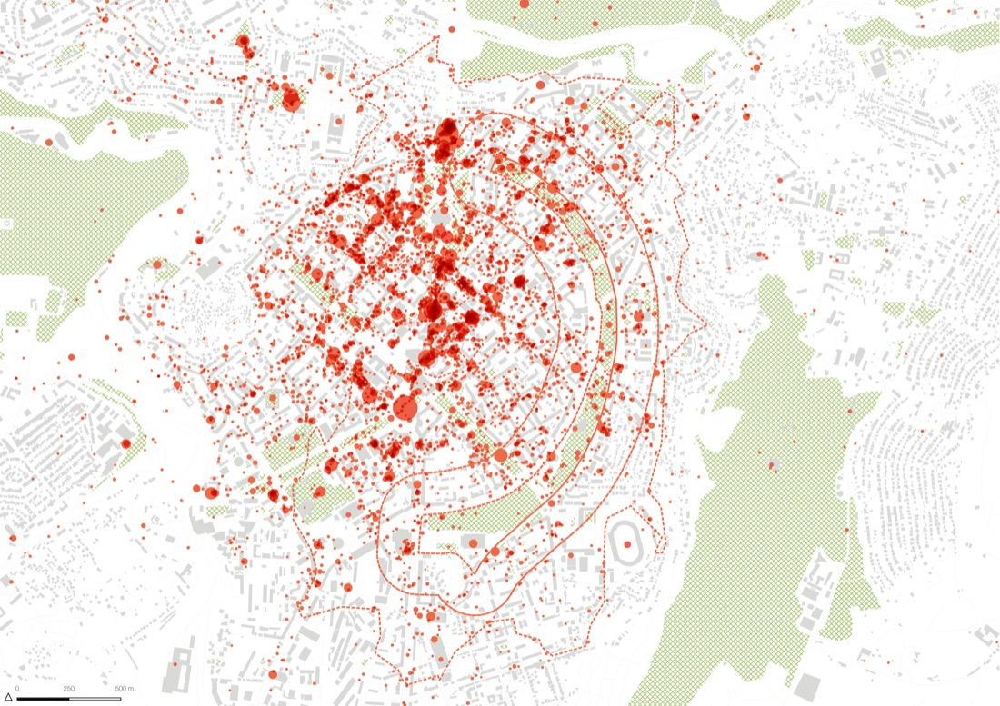

Circular Park — Yerevan
UNDP wanted to give Yerevan’s planning process for its historic Circular Park a genuinely evidence-based starting point — understanding not just what the park looks like, but how, when, and by whom it’s actually used, before proposing any redesign.
Commissioned by UNDP’s Armenia country office as consulting GIS expert services, running from initial scoping in late 2019 through delivery in mid-2020 and follow-on presentation work into 2021. Data collection for mobility patterns fell in May 2020, during the COVID-19 pandemic — a limitation the team explicitly flagged in their own findings.
Combined SPIN Unit’s necessary/optional activity framework (Foursquare data), OpenStreetMap land use, anonymised mobile-tower connection data for hourly activity patterns, and space-syntax street-centrality analysis to model pedestrian movement and cross-reference it against traffic and air-pollution risk — across five segments of the park at both site and city scale.
Delivered as a 54-page analytical report (July 2020) and an extended final presentation (May 2021).
{kind=link}

Open full size ↗